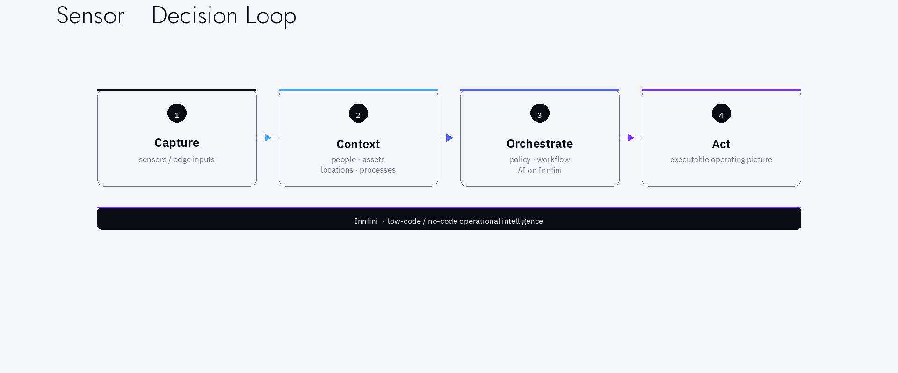

RFID vs BLE vs UWB as sensing inputs to an operational intelligence fabric
Choosing a radio is a sensing-design decision — coverage, precision, environment, and cost. Innfini is the Enterprise Operational Intelligence layer that turns those feeds (alongside video, SCADA, ERP, and more) into one live operating picture across people, assets, locations, and processes — with AI and automation under your policy.

Illustrative diagram — sensing inputs to Innfini.
Innovent is not an RFID company. RFID, BLE, and UWB are optional inputs to the Innfini sensor fabric. Many deployments mix radios with computer vision, IoT, GPS, LoRaWAN, and enterprise systems. The category we own is Enterprise Operational Intelligence & Digital Transformation via Innfini.
RFID / BLE / UWB — educational tradeoffs
Ranges and strengths below are industry-typical and environment-dependent. They are not Innovent-measured SLAs, product benchmarks, or customer proof. Exact design is scoped in discovery with a solutions architect.
| Dimension | RFID (esp. passive UHF) | BLE (beacons / tags) | UWB (RTLS-class) |
|---|---|---|---|
| Ops view | Radio ID — strong at who/what passed a read zone and high-volume inventory | Low-power presence — strong at zone / room-level location | Ultra-wideband ranging — strong at high-precision distance / position indoors |
| Typical range | Passive UHF: ~1–10+ m at portals (power, tag, antenna, clutter decide); HF/NFC: cm–~1 m | ~10–50 m indoors typical for presence (power class + walls decide) | Often ~10–50 m class per link; LOS and anchor density matter |
| Typical precision | Excellent identity at the read point; not inherently cm-level continuous RTLS | Zone / room level from RSSI / proximity | Decimeter-to-centimeter class when RTLS is engineered correctly |
| Strengths | Low tag cost at scale; bulk reads; dock/portal workflows; mature industrial ecosystem | Battery life; people + asset zone tracking; flexible install | Precision location; geofence safety; multipath-resistant ranging vs narrowband RSSI |
| Limits | Metal / liquid / multipath can detune reads; continuous high-precision track is not the default passive pattern | RSSI is noisy indoors; overcrowded 2.4 GHz | Higher infrastructure / tag cost; denser anchors; overkill for pure inventory portals |
| When teams choose it | High-volume inventory & asset ID; receiving portals; “did it pass this point?” | Workforce / asset presence; room or zone awareness; battery-constrained tags | Precision RTLS; safety exclusion zones; environments where meters of error are unacceptable |
| Role on Innfini | Input — identity & portal events into live state | Input — presence / zone events into live state | Input — precise location into live state |
Figures are educational order-of-magnitude guidance for operators and architects — not product claims. Site survey, tag selection, reader/anchor layout, and interference dominate real results.
There is no universal “best” radio.
Portal inventory problems and centimeter safety zones are different jobs. Many mission-critical sites mix RFID + BLE + UWB (and vision / IoT) because each radio answers a different question on the same operating picture.
- 1Do we need bulk identity at chokepoints, zone presence, or precise continuous location?
- 2What does the environment do to RF (metal, liquids, dense walls, outdoors)?
- 3What is the cost of being wrong — a missed inventory read vs a safety-zone breach?
- 4Which enterprise systems must act on the event (WMS, CMMS, C2 console, work order)?
Those answers select sensing design. Innfini is where selected feeds become shared state, triage, and accountable action.
Sensors feed the fabric. Innfini is the operating layer.
On the Innfini platform architecture, edge sensing sits as L1 Sensor fabric — a hardware-agnostic edge layer that can ingest radio and device feeds into the same runtime as vision, SCADA/telemetry, and enterprise integrations. Agents and operators reason over live sensor state, not a separate RFID console.
What lands in the fabric
- Radios: RFID, BLE, UWB (and related patterns such as NFC where relevant)
- Other sensing: computer vision, LoRaWAN, environmental / IoT sensors, GPS where appropriate
- Systems alongside sensors: SCADA / industrial protocols, ERP / WMS / CMMS, identity, GIS, CCTV
What Innfini does with those inputs
- 1Normalize events into people, assets, locations, and processes on one live graph
- 2Fuse radio events with video and system state so operators see relationships, not silos
- 3Triage and act under policy — agents handle routine load; humans keep authority where required
- 4Leave an audit trail — what was known, when, and what was done
When “and” beats “or”
Warehouse / logistics
RFID portals + BLE zone + selective UWB for high-value — portal throughput + zone labor awareness + precision where loss risk is high.
Industrial / manufacturing
UWB RTLS + RFID on WIP/containers + vision — precision tools/people + durable ID + visual confirmation.
Healthcare ops
BLE presence + RFID on critical assets (+ vision where allowed) — battery-friendly staff/asset presence + durable equipment ID.
Command & control / smart-city floors
Any of the above + CCTV + IoT + SCADA — radios are one feed class among many on the ICCC / C2 picture.
Patterns are educational archetypes — not named customer deployments.
Operators in logistics, industrial, healthcare, public safety, and smart-city environments often combine multiple sensing modalities — then still struggle when each radio has its own console. Innfini’s job is the shared operating picture and accountable action, not replacing every reader vendor.
Design the sensing layer. Run the operation on Innfini.
Book a 60-minute discovery with a solutions architect. We walk your sites, radios, cameras, and systems — and show what an Innfini operating picture looks like when RFID, BLE, UWB, and other feeds are inputs to one fabric.